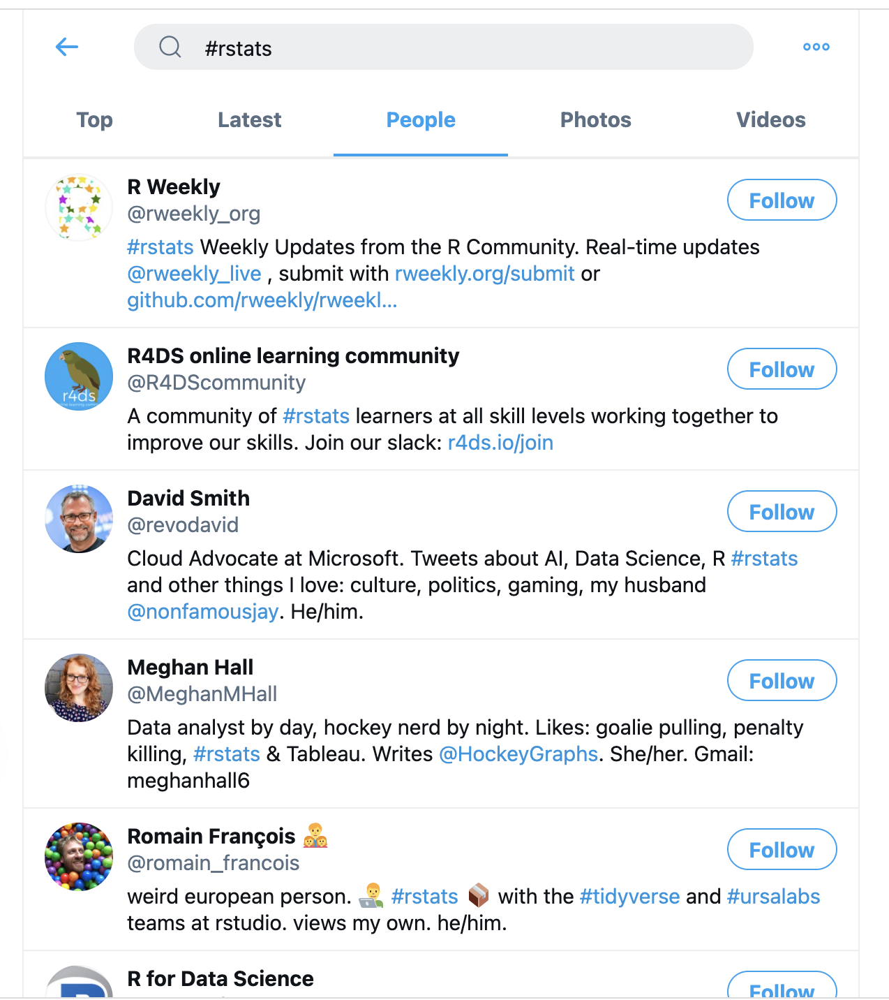

7Hello Everyone!!

About SARA

SARA stands for Savitribai Ramabai Institute of Data Science.
It is a Charitable Education Trust, est. in 2023 by Dr. Ajay Kumar Koli & Dr. Kiran Lata Koli.
Our mission to enhance the representation of under-privileged communities in the field of data science.
Work

We think we work like this but …
Work
This is our work look actually.

ü§Ø Work Flowchart
MS Word

Excel

PPTs

Other Tools:
PDF
SPSS
SAS
STATA
Reference management
Work Influencer

üëÄ Focus on Content.
üíÖ Set Yourself Apart.
Types of Data Roles

Data Science Process

R Programming Language

“R is a free software environment for statistical computing and graphics.”
History of R
Initially developed as S language by Bells Labs.
First appeared in August 1993 as R language by:
Ross Ihaka
(New Zealand Statistician)

Robert Gentleman
(Canadian Statistician)

R is FREE
Download R from CRAN

R Console
R version 4.3.1 (2023-06-16)
R name “Beagle Scouts”
R licence “ABSOLUTELY NO WARRANTY”
R prompt
>|

üî• WE NEED A SUPERHERO üî•

posit, earlier RStudio
RStudio is an integrated development environment (IDE) for R and Python.
As per posit, RStudio is “the most trusted IDE for open source data science”.
Download RStudio.

RStudio IDE

RStudio IDE
“It includes a console, syntax-highlighting editor that supports direct code execution, and tools for plotting, history, debugging, and workspace management.”
RStudio \(\rightarrow\) Tools \(\rightarrow\) Global Options

RStudio \(\rightarrow\) Tools \(\rightarrow\) Global Options

Create RStudio Project

Create RStudio Project

In Case Anything Goes Wrong\(...\)

Create RStudio Project

Create RStudio Project

Create RStudio Project

RStudio Project “name”

RStudio Project


Artwork by Alision Horst
Write R Codes in
R Console

Write R Codes in
R script using RStudio.


FUNCTION
Artwork by Alision Horst
Structure of R Function

Structure of R Function

Structure of R Function

Structure of R Function

Structure of R Function


COMMENT
Artwork by Alision Horst

PACKAGES
Install Packages

Name of the Packages

Installed Packages

Tools \(\rightarrow\) Package Updates

Select Packages to Update

Click Install Updates

To Remove Packages


OBJECTS
Artwork by Alision Horst

COMMUNITY
Artwork by Alision Horst
RStudio: Package Website

Posit Community

Stack Overflow

GitHub

QUARTO
Quarto is the Next Generation of R Markdown

Download Quarto

Get Started: Choose IDE

File \(\rightarrow\) New File \(\rightarrow\) Quarto Document

New Quarto Document

New Quarto Document

New Quarto Document

New Quarto Document

New Quarto Document

Save Quarto Document

Process When You Render the Quarto Document

Source Editor vs. Visual Editor

Visual Editor

Visual Editor


MARKDOWN
Images
| Markdown Syntax | Output |
|---|---|
|
|
|
 |
|
|
|
|
Goal
How to visualize data using R package ggplot2.

ggplot2 Layers

Import Data

Map Variables Aesthetics

Add Geometric Shapes

“Fill” Color
“Fill” Colors
“Fill” & “Color” Colors
Plot A Continuous Variable
Two Continuous Variables
Geom Shape

A Factor & Two Cont.
A Factor & Two Cont.
Color Palette

Color Palette
library(wesanderson)
names(wes_palettes) [1] "BottleRocket1" "BottleRocket2" "Rushmore1"
[4] "Rushmore" "Royal1" "Royal2"
[7] "Zissou1" "Zissou1Continuous" "Darjeeling1"
[10] "Darjeeling2" "Chevalier1" "FantasticFox1"
[13] "Moonrise1" "Moonrise2" "Moonrise3"
[16] "Cavalcanti1" "GrandBudapest1" "GrandBudapest2"
[19] "IsleofDogs1" "IsleofDogs2" "FrenchDispatch"
[22] "AsteroidCity1" "AsteroidCity2" "AsteroidCity3" ggplot(data = penguins,
mapping = aes(x = bill_length_mm, y = bill_depth_mm)) +
geom_point(aes(color = species, shape = species)) +
labs(
title = "The title of the plot",
subtitle = "The subtitle of the plot",
x = "Bill length (mm)",
y = "Bill depth (mm)"
) +
theme_clean() +
scale_color_manual(values = wes_palette("BottleRocket2", n = 3))
Social Media #RStats

Artwork by Alision Horst